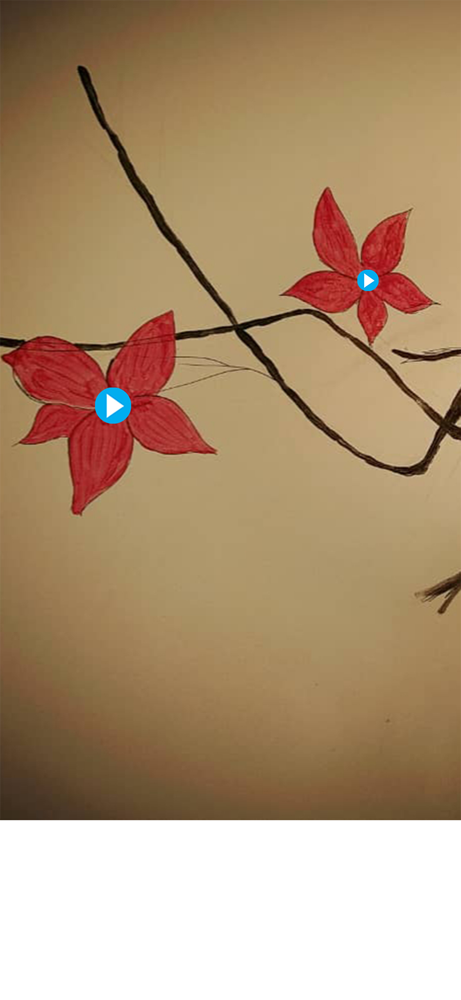

<audio id="flower1" src="flower1.mp3" preload="auto"></audio>
<audio id="flower2" src="flower2.mp3" preload="auto"></audio>


<script>

  function flower1() {
        var audio = document.getElementById("flower1");

        if (audio.duration > 0 && !audio.paused) {
            audio.pause();
            audio.currentTime = 0;
        } else {
            audio.play();
        }
    }

  function flower2() {
        var audio = document.getElementById("flower2");

        if (audio.duration > 0 && !audio.paused) {
            audio.pause();
            audio.currentTime = 0;
        } else {
            audio.play();
        }
    }


</script>


<map name="image-map">
  
  
    <area target="_blank" alt="" title="" href="" onclick="javascript:flower1(); return false; " coords="198,906,356,1064" shape="rect">
    <area target="_blank" alt="" title="" href="" onclick="javascript:flower2(); return false; " coords="837,625,963,754" shape="rect">

</map>

